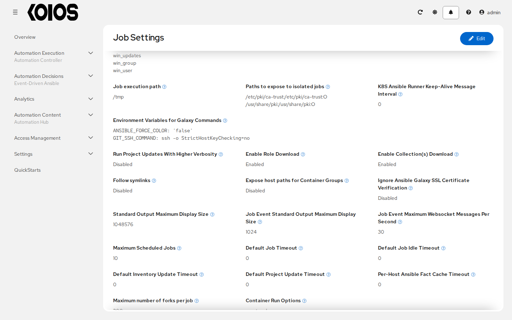

30. Security
The following sections will help you gain an understanding of how automation controller handles and lets you control file system security.
Each job runs in its own container, from an execution environment: in Koios Automation Platform, a pod of a container group, or a container on an execution node outside the cluster. The container keeps the job apart from the host and from other jobs, but not from its own inputs: a playbook can read the files of its project, the files of its execution environment and the data that automation controller passes to run it (inventory, extra variables, and credentials injected as files or environment variables).
For credential security, users may choose to upload locked SSH keys and set the unlock password to “ask”. You can also choose to have the system prompt them for SSH credentials or sudo passwords rather than having the system store them in the database.
30.1. Playbook Access and Information Sharing
Jobs run in containers, so a playbook does not see the files of the host or of other jobs. Inside its container, it sees its project, its execution environment and the data passed to the job.
On execution nodes outside the cluster you can expose additional directories of the host to the container; see Isolation functionality and variables.
30.1.1. Isolation functionality and variables
Automation controller runs jobs in execution environments, with project content, inventory and the credential data needed for the run. This isolates execution from the controller host; it does not restrict a playbook to reading only its project directory.
The job staging directory defaults to /tmp. Configure Job execution path in Settings > Automation Execution > Job, or AWX_ISOLATION_BASE_PATH in /api/controller/v2/settings/jobs/, to change that base path on the execution host. For example:
AWX_ISOLATION_BASE_PATH = "/opt/tmp"
For execution nodes outside Kubernetes that run execution environments with Podman, Paths to expose to isolated jobs (AWX_ISOLATION_SHOW_PATHS) adds host paths to the job container. For example:
AWX_ISOLATION_SHOW_PATHS = ["/srv/job-data:/srv/job-data:ro"]
These paths must exist on the execution node where the job runs; a path on the controller host is not automatically available on another node.
Container groups, the default execution path in Koios Automation Platform, use Kubernetes pods instead. AWX_ISOLATION_SHOW_PATHS only adds mounts there when Expose host paths for Container Groups (AWX_MOUNT_ISOLATED_PATHS_ON_K8S) is enabled. The resulting hostPath volumes refer to the Kubernetes node that runs the pod, and require cluster security policies that allow those mounts. Setting the path list alone does not expose controller files in a container group.
For storage supplied through the container group’s custom pod specification, configure the pod’s volumes and the execution container’s volumeMounts for the storage you need. Use credentials to supply authentication data rather than exposing a host’s entire SSH directory.

30.2. Role-Based Access Control
Koios Automation Platform uses role definitions and assignments to delegate access. Organizations, users and teams are shared platform resources managed through the gateway. Each service enforces permissions on the resources it owns, such as controller inventories, projects and job templates.
A role assignment answers three questions: who receives access, which role definition supplies the permissions, and which resource is the scope. A user can receive several direct assignments and can also inherit assignments granted to teams they belong to.
30.2.1. Definitions, assignments and scope
Concept |
Meaning |
|---|---|
Permission |
An allowed action on a resource type, such as viewing an inventory or executing a job template. |
Role definition |
A named set of permissions and the resource type on which it can be assigned. The same definition can be reused for different resource instances. |
User assignment |
Grants a role definition to a user on a particular resource, or globally when that kind of assignment is supported. |
Team assignment |
Grants a role definition to a team. Its members receive the access conveyed by that assignment. |
Resource scope |
Identifies the organization, team or service resource to which a grant applies. A global definition has no resource content type and its assignments have no object ID. |
For example, to let Josie and Carter administer the organization SomeCompany, assign Organization Admin on SomeCompany to each user. This is two user assignments using one role definition. It does not create a new role definition for each person or grant permission to create other organizations.
Access can extend to related resources when the definition includes their permissions and the service’s registered resource relationships support that scope. For example, Organization Admin includes administration of the selected organization and its covered resources. That is different from creating a configurable chain of parent and child role definitions.
The controller retains legacy fields such as admin_role and synchronizes compatible assignments with its older RBAC representation. Those fields are compatibility details, not a platform procedure for constructing role hierarchies. Manage access through supported role assignments rather than changing parent/child links in those internal records.
30.2.2. Team membership and resource access
A team belongs to an organization and groups users for assignment purposes. Team Member conveys the role assignments granted to that team. It does not, by itself, grant permission to deploy, execute arbitrary templates or use every inventory and credential in the organization.
For example:
Create the Ops team in SomeCompany and add its users.
Grant the team an execution role on the Deploy application job template.
Team members can then use that grant to launch that template, subject to the service’s launch checks.
Removing a user from the team removes the access inherited through that membership. A direct assignment to the user, or access inherited through another team, is independent and can remain. Organization membership and permission to operate a resource must be evaluated separately.
See Teams, Users and Organizations for membership and role-assignment procedures.
30.2.3. Managed and custom role definitions
System-managed role definitions supply the platform and service roles. They can be assigned when the caller has the required authority, but their permission lists cannot be edited or the definitions deleted. Custom definitions can be created, changed and removed where the service permits them, using the supported permissions for their resource scope.
The platform gateway enables custom roles, including global definitions, but the current gateway API restricts permissions in custom global definitions to the automation hub service (the galaxy API service). This does not authorize arbitrary global controller roles. Supported permissions and assignment rules are validated by the gateway and the owning service; inspect their role APIs rather than assuming every role type accepts every permission.
Role or privilege |
Scope |
Purpose |
|---|---|---|
Platform administrator |
Platform-wide |
Administration across the platform through the privileged user account. |
Platform Auditor |
Platform-wide |
Broad viewing access; this is not a general grant to change resources. |
Organization Admin |
One organization |
Administers that organization and the resources covered by its permissions. Creating other organizations requires global authorization. |
Organization Member |
One organization |
Membership and associated visibility. It does not grant use or execution access to every controller resource. |
Team Admin / Team Member |
One team |
Team administration or membership; members inherit the resource assignments granted to the team. |
Controller resource roles |
A selected resource or supported organization scope |
Grant operations such as administration, use, update, ad hoc execution or template execution according to the definition’s permissions. |
Controller definitions include resource-specific roles such as Project Admin, Project Use, Inventory Use, Credential Use and JobTemplate Execute. Read the definition’s permissions and the assignment’s scope: a role name alone does not establish access to every resource of that type.
30.2.4. Applying assignments
Use gateway access-management pages for platform users, teams and organizations. On controller resources, the User Access and Team Access tabs show the corresponding assignments. Select the intended resource scope and grant the smallest role that supplies the required operations. See Organizations and Teams for the relevant UI procedures.
Permission to execute a job template is different from permission to edit it or choose replacement launch resources. A template execution grant can allow a user to run it with its configured inventory and credentials. Selecting other inventory, credentials, execution environments or instance groups at launch is subject to additional permission checks. Editing a template’s resource references also requires the relevant access to those resources; template administration alone is not a universal use grant. See Job Templates.
Credential use permits the platform to inject a credential into an authorized job without returning its stored secret through an ordinary credential read. It does not make untrusted playbooks safe: code running with injected credentials can access that data. Control both the content being run and who can change its project or template. See Credentials.
30.2.5. Example: independent resource grants
Recipient |
Role definition |
Scope |
Result |
|---|---|---|---|
Josie |
Organization Admin |
SomeCompany |
Administration of that organization and its covered resources. |
Carter |
Project Admin |
Project 22 |
Administration of that project; this is not a global administrator grant. |
Carter |
Inventory Use |
Inventory 42 |
Permission to use that inventory where the operation permits it. |
Ops team |
JobTemplate Execute |
Deploy application |
Team members inherit the template execution grant. |
The project, inventory and template remain separate resources. A team assignment grants access to them; it does not make the team their owner. Instance-group selection and network reachability are separate from RBAC, so these grants do not imply a dedicated host, network zone or execution location.